Esse tutorial tem como objetivo apresentar o Google Dart. Para isso é necessário que o leitor possua conhecimento básico de alguma linguagem de programação orientado a objetos.
O problema de desenvolvimento de software atual tem problemas de complexidade, difícil de manter arquivos de longos códigos, etc. Os problemas que tem os sistemas complexos.
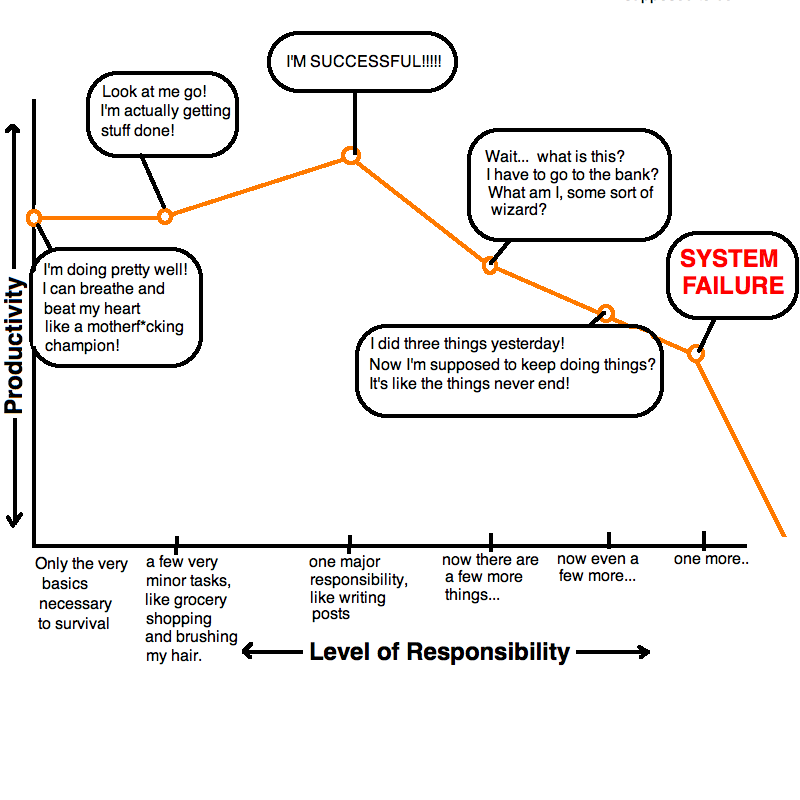JavaScript tem problemas como?
Dart é fácil de aprender. É uma linguagem orientada a objetos com classes, herança simples, escopo léxico, as funções de nível superior, e uma sintaxe familiar. Dart compila para JavaScript. Dart foi projetado desde o início para compilar para JavaScript, para que aplicativos Dart pode ser executado em toda a web moderna. Cada característica considerada para a linguagem deve de alguma forma ser traduzido para JavaScript performance e lógica antes de ser adicionado. Dart é executado no cliente e no servidor. A máquina virtual Dart (VM) pode ser integrada num navegador web, mas também pode executar autônoma na linha de comando. Com o apoio da biblioteca interna para arquivos, diretórios, tomadas, e até mesmo servidores de web, você pode usar Dart para aplicativos completos de ponta a ponta. Dart vem com um editor leve. Você pode usar o Editor do Dart para escrever, lançar e aplicativos debug Dart. Dart Editor não é necessário para escrever Dart; é apenas uma ferramenta que pode ajudá-lo a escrever melhor código mais rápido. Dart suporta tipos, sem exigir que eles. Você pode omitir tipos quando você quer mover-se muito rapidamente, não é certo que a estrutura a tomar, ou simplesmente quer expressar algo que você não pode com o sistema de tipos. Usando tipos significa que menos comentários são necessários para documentar o código e ferramentas podem dar melhores avisos e mensagens de erro.
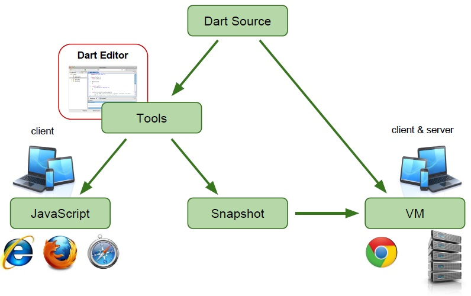Dart escalas de pequenos scripts para grandes aplicações complexas. Desenvolvimento Web é muito mais um processo iterativo. Dart tem uma grande variedade de bibliotecas integradas. A biblioteca núcleo suporta tipos de embutidos e outras características fundamentais, tais como coleções, datas e expressões regulares. Aplicativos da Web podem usar a biblioteca HTML otimizada para Dart. Aplicativos de linha de comando pode usar a biblioteca de I / O para trabalhar com arquivos, diretórios, soquetes e servidores. Outras bibliotecas incluem URI, UTF, Matemática, e teste de unidade. Dart suporta seguro, simples de concorrência com os isolados. Tópicos tradicionais de memória compartilhada são difíceis de depurar e pode levar a impasses. Dart é open source. Dart nasceu para a web, e está disponível sob uma licença BSD.
Para fazer o analize da performance de Dart, foi necessário fazer testes em distintos tipos de projetos, os quais são:
| 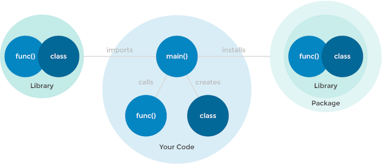 |
| 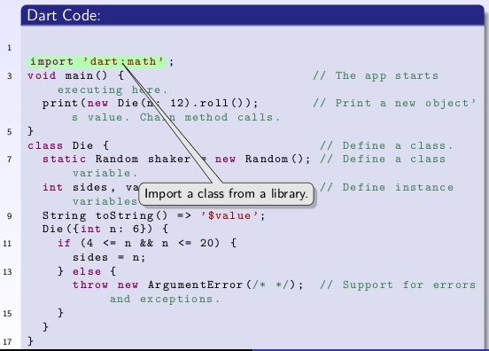 | 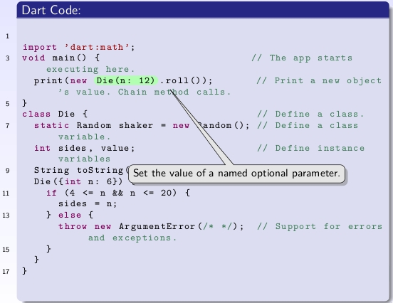 |
| 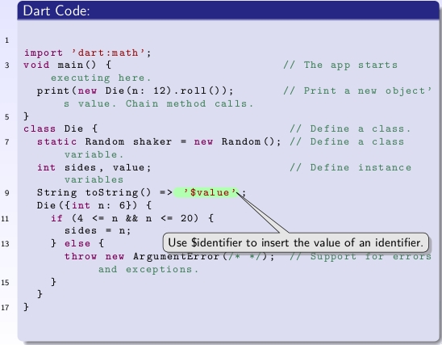 | 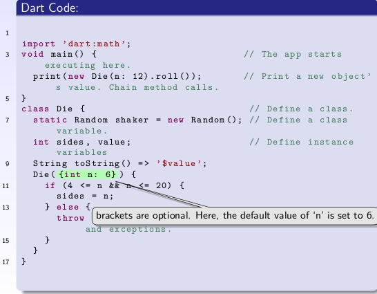 |
Dart é uma linguagem orientada a objetos com classes, herança e mixin. Todas as classes descendem de "Object."
Para fazer uma classe abstrata e um método abstrato use (;) por exemplo:
| 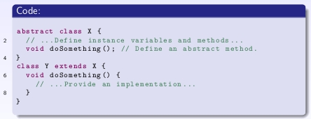 |
Chamando um método abstrato resulta em um erro de tempo de execução.
Cada classe define implicitamente uma interface que contém todos os membros da classe e todas as interfaces que implementa. Se você quiser criar uma classe A que suporta API do classe B sem herdar a implementação do B, classe A deve implementar a interface B, por exemplo:
| 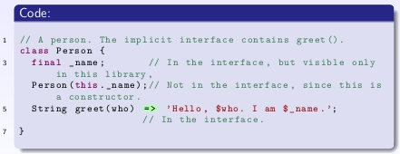 |
Uma implementação da interface Pessoa.
| 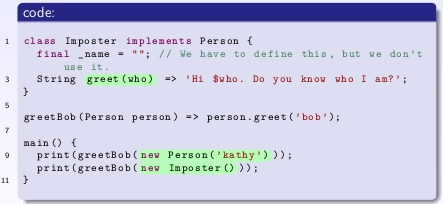 |
resultado da execução do código é:
| 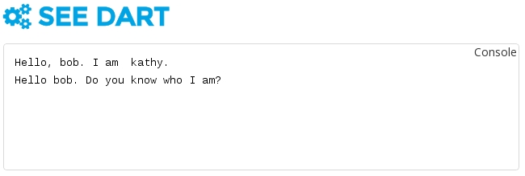 |
Mixins são uma forma de reutilizar o código de uma classe em várias hierarquias de classe uma que contém uma combinação de métodos de outras classes Para usar um mixin, utilizar a palavra-chave "with" seguido por um ou mais nomes de Mixin, por exemplo:
| 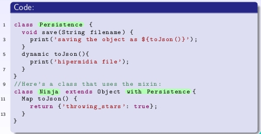 |
resultado da execução do código é:
| 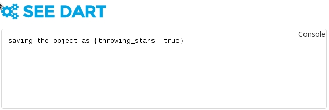 |
|
IMPORTANTE* : class X extends S with M2, M1, tem a seguinte prioridade: self > M1 > M2 > S |
Dart oferece um conjunto de bibliotecas que abarcam todo todo HTML5, eles tem a ideia que qualquer coisa que você pode fazer no HTML5, possa ser feito também no Google Dart.
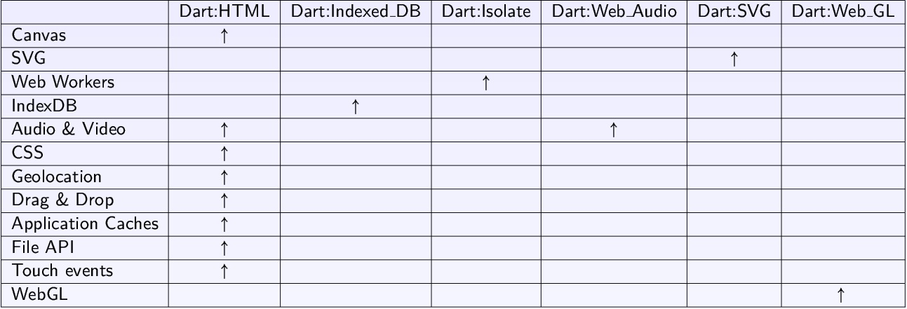A biblioteca suporta principais tipos internos e outras características essenciais, tais como coleções, datas e expressões regulares. Aplicativos da Web podem usar a biblioteca HTML:DOM, mas otimizado para Dart. Aplicativos de linha de comando pode usar a biblioteca de I / O para trabalhar com arquivos, diretórios, sockets e servidores. Outras bibliotecas incluem URI, UTF, Crypto, Matemática, e teste de unidade.
por exemplo intializing arranjos, Olhe :
| 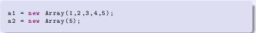 |
|
a1 é um arranjo com 5 elementos: [1,2,3,4,5], a2 é um arranjo com 5 elementos para: [undefined,undefined,undefined,undefined,undefined] |
Dart é muito mais limpo. Um arranjo é basicamente uma lista e, portanto, tem esta interface.
|
a1 contém 5 diferentes elementos. a2 contém espaço para 5 elementos. Além disso você tem características interessantes como "removeRange" ou suporte para "sorting". |
var a = 5;
var b = 10;
var rpta = my_add(a,b);
print("Addition of numbers:");
print(rpta);
a = p1;
b = p2;
rpta = my_add(a,b);
print("Addition of Points:");
print(rpta);
a = "Hello ";
b = "World!";
rpta = my_add(a,b);
print("Addition of Strings:");
print(rpta);
print("new List() is List< Object >: ${new List() is List< Object >}");
print("new List() is List: ${new List() is List< dynamic >}");
print("new List< String >() is List< Object >: ${new List< String >() is List< Object >}");
print("new List< Object >() is List< String >: ${new List< Object >() is List< String >}");
print("new List< String >() is List< int >: ${new List< String >() is List< int >}");
print("new List< String >() is List: ${new List< String >() is List}");
Use o dardo: html biblioteca para programar o navegador, manipular objetos e elementos no DOM e HTML5 APIs acesso. DOM significa Document Object Model, que descreve a hierarquia de uma página HTML.
Outros usos comuns de dardo: html estão manipulando estilos (CSS), a obtenção de dados usando solicitações HTTP e troca de dados usando WebSockets. Somente aplicações web pode usar dardo: html, aplicativos de linha de comando não.
Esta biblioteca permite o acesso a objetos JavaScript do Dart, permitindo que o código Dart para obter e definir propriedades e chamar métodos de objetos JavaScript e chamar funções de JavaScript. A biblioteca se encarrega de converter entre os objetos, quando possível, ou prestação de proxies se a conversão não for possível dardo e JavaScript.
Esta biblioteca ainda não faz Dart objetos utilizáveis a partir de JavaScript, seus métodos e propriedades não são acessíveis, apesar de não permitir que as funções de dardo a ser passado para dentro e chamado a partir de JavaScript.
<div id="sample_container_id">
<table>
<tr>
<td>
Tarefa:<input type="text" id="tarefa_input" />
<br>
<input type="submit" id="tarefa_button" value="Adicionar Tarefa">
</td>
<td>
<h3>
Lista de Tarefas</h3>
<ul id="lista_tarefas">
</ul>
</td>
</tr>
</table>
</div>
Tarefa:
Lista de Tarefas
void main() {
querySelector("#tarefa_button")
..onClick.listen(addTarefa);
}
void addTarefa(MouseEvent event) {
InputElement input = querySelector("#tarefa_input");
var text_input = input.value;
var novoItem = new LIElement();
novoItem.text = text_input;
querySelector("#lista_tarefas")
..children.add(novoItem);
}
function helloJavaScript(name){
alert("Hello " + name + " from Dart!!!!");
}
<div id="sample_container_id">
Nome:<input type="text" id="nome_input" />
<br>
<input type="submit" id="nome_button" value="Fala!!!!">
</div>
<script type="application/dart" src="first.dart">
</script>
<script src="packages/browser/dart.js">
</script>
<script src="example.js">
</script>
void main() {querySelector("#nome_button")
..onClick.listen(addJSFunction);
}
void addJSFunction(MouseEvent event) {
InputElement input = querySelector("#nome_input");
var text_input = input.value;
context.callMethod("helloJavaScript",[text_input]);
}
Canvas (tela) é um elemento HTML5 que permite gerar gráficos dinamicamente através scripting. Gerar gráficos estáticos e animações. Qualquer texto dentro deste elemento será exibido apenas em navegadores que não suportam a tela
é uma maneira de desenhar gráficos de uma forma simples em Dart:
| 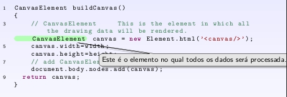 | 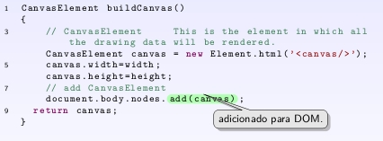 |
classes para manipular elementos html
| 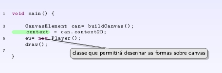 | 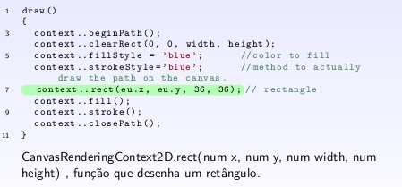 |
3D solar system animation A solar system implementation using WebGL.
desenhar um círculo , a função e:
|
void arc(num x, num y, num radius, num startAngle, num endAngle); |
em seguida, mover o círculo com teclado usar "document.onKeyDown.listen()" , para eventos de teclado "attachMover(KeyboardEvent event)", e função "move(String dir)" da Class Player para identificar a direção na qual você tem que mover o círculo.
Aqui estão algumas empresas e usam Dart.
Support and Community, https://www.dartlang.org
Walrath, Kathy; Ladd, Seth (March 7, 2012). What is Dart? (1st ed.). O'Reilly Media. p. 20. ISBN 978-14493-32327.
Walrath, Kathy; Ladd, Seth (November 7, 2012). Dart: Up and Running (1st ed.). O'Reilly Media. p. 144. ISBN 978-1449330897.
Buckett, Chris (December 28, 2012). Dart in Action (1st ed.). Manning Publications. p. 475. ISBN 978-1617290862.